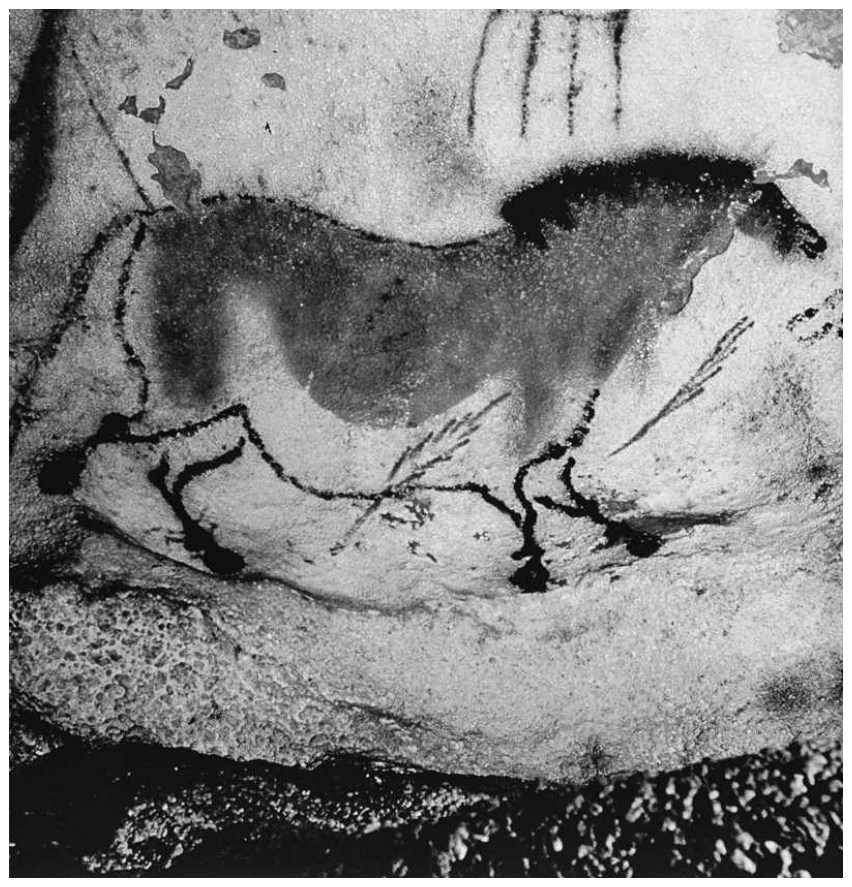
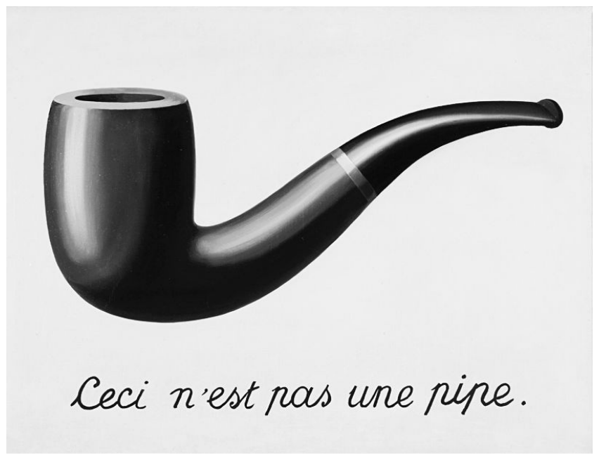
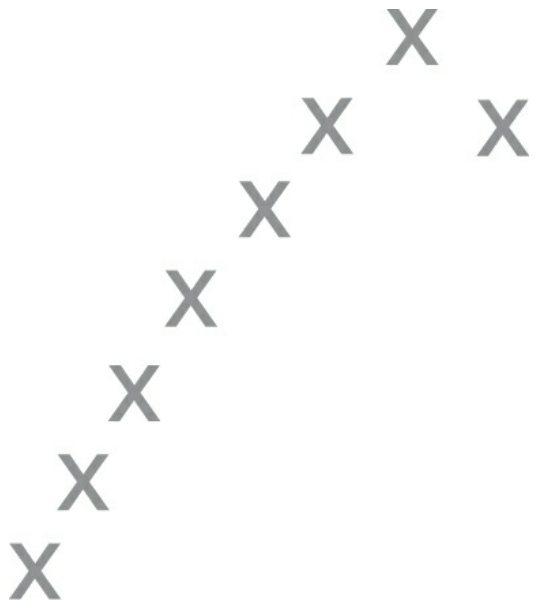
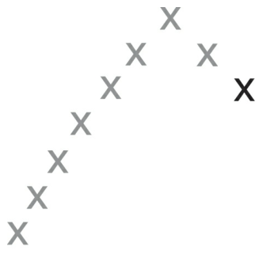
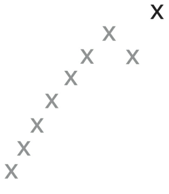
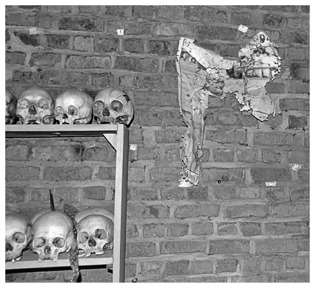
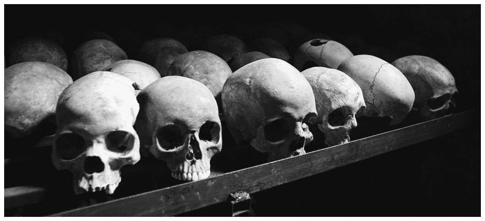
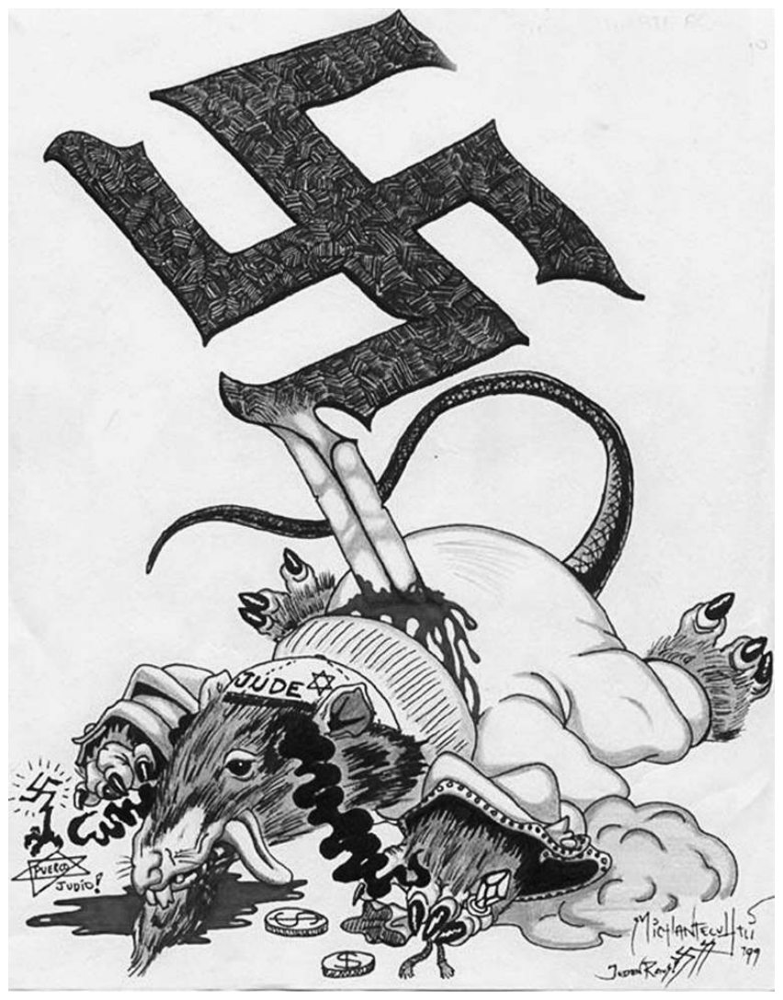
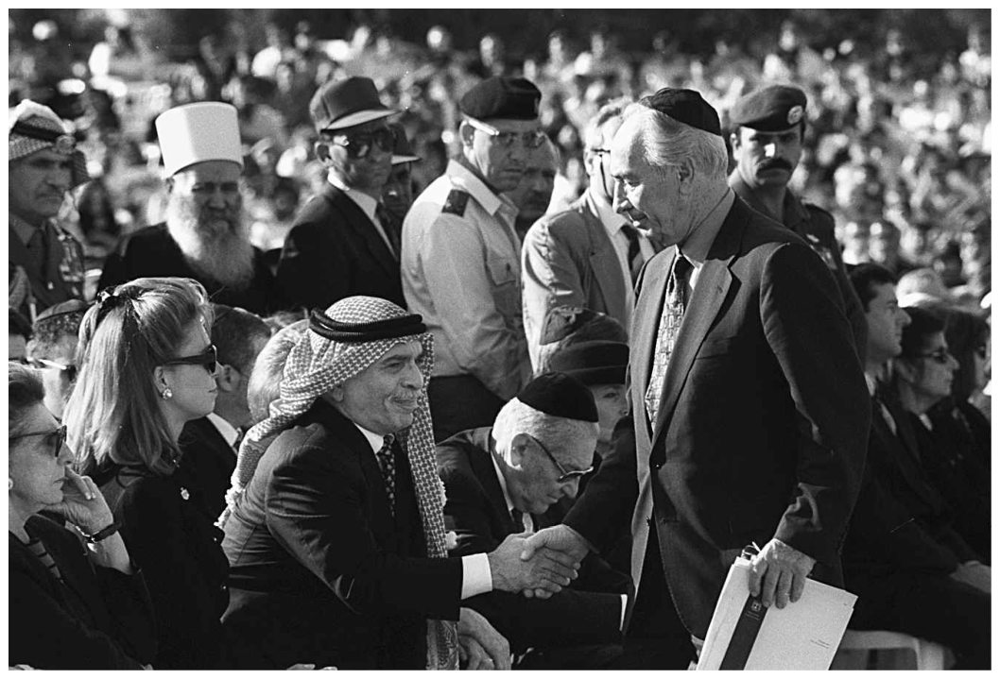

Chương 15 — Những ẩn dụ mà chúng ta giết chóc nhân danh nó
Mười lăm
Những Phép Ẩn Dụ Khiến Ta Giết Chóc
VÍ DỤ 1
Trải dài ít nhất từ vụ hớ hênh về con bê vàng ở Núi Sinai, nhiều nhánh của các tôn giáo Áp-ra-ham đã có nỗi ám ảnh về tượng thờ (graven images). Điều đó đã mang lại cho chúng ta thuyết bài trừ thánh tượng (aniconism), tức việc cấm các hình tượng, và những kẻ phá hủy thánh tượng (iconoclasts), những người phá hủy các hình ảnh gây xúc phạm vì lý do tôn giáo. Do Thái giáo Chính thống đôi khi từng say mê điều đó; những người theo Thần học Calvin cũng vậy, đặc biệt khi nhắm vào những người Công giáo thờ ngẫu tượng kia. Hiện nay, chính các nhánh của Hồi giáo Sunni đang triển khai lực lượng cảnh sát chống tượng thờ theo đúng nghĩa đen và coi đỉnh cao của sự xúc phạm là hình ảnh của Allah và Muhammad.
Vào tháng 9 năm 2005, tờ báo Đan Mạch Jyllands-Posten đã đăng các bức tranh biếm họa về Muhammad trên trang xã luận của mình. Đó là một cuộc phản kháng chống lại sự kiểm duyệt và tự kiểm duyệt ở Đan Mạch về chủ đề này, chống lại việc Hồi giáo trở thành một con bò thiêng bất khả xâm phạm trong một nền dân chủ phương Tây nơi các tôn giáo khác dễ dàng bị chỉ trích châm biếm. Không bức biếm họa nào gợi lên sự tôn kính hay tôn trọng. Nhiều bức liên kết trực tiếp Muhammad với chủ nghĩa khủng bố (ví dụ: ông đội một quả bom làm khăn xếp). Nhiều bức châm biếm lệnh cấm đó — Muhammad dưới dạng một hình vẽ que với chiếc khăn xếp, Muhammad (cầm kiếm) với một hình chữ nhật đen che ngang mắt, Muhammad đứng trong hàng nhận diện của cảnh sát bên cạnh những người đàn ông râu ria đội khăn xếp khác.
Và như một hệ quả trực tiếp từ các bức biếm họa đó, các đại sứ quán và lãnh sự quán phương Tây đã bị tấn công, thậm chí bị đốt cháy, ở Li-băng, Syria, Iraq và Libya. Các nhà thờ bị đốt ở miền bắc Nigeria. Người biểu tình bị giết ở Afghanistan, Ai Cập, Gaza, Iran, Iraq, Li-băng, Libya, Nigeria, Pakistan, Somalia, và
Thổ Nhĩ Kỳ (thường do đám đông giẫm đạp hoặc do cảnh sát trấn áp người bạo loạn). Và những người không theo đạo Hồi đã bị sát hại ở Nigeria, Ý, Thổ Nhĩ Kỳ và Ai Cập để trả thù cho các bức biếm họa.
Vào tháng 7 năm 2007, các bức vẽ của một nghệ sĩ Thụy Điển về đầu của Muhammad gắn trên thân một con chó cũng gây ra phản ứng tương tự. Ngoài các cuộc biểu tình đẫm máu, Nhà nước Hồi giáo Iraq đã treo thưởng 100.000 đô-la cho cái chết của nghệ sĩ đó, Al-Qaeda nhắm mục tiêu tiêu diệt nghệ sĩ (cùng với nhân viên của tờ Jyllands-Posten), các âm mưu ám sát bị nhà chức trách phương Tây ngăn chặn, và một vụ mưu sát đã giết chết hai người qua đường.
Vào tháng 5 năm 2015, hai tay súng đã tấn công một sự kiện chống bài trừ thánh tượng ở Texas, nơi giải thưởng 10.000 đô-la được trao cho bức họa Muhammad “đẹp nhất”. Một người bị thương trước khi hai tay súng bị cảnh sát tiêu diệt.
Và dĩ nhiên, vào ngày 7 tháng 1 năm 2015, hai anh em, những người con trai sinh ra tại Pháp của người nhập cư Algeria, đã thảm sát tòa soạn Charlie Hebdo, giết chết mười hai người.
VÍ DỤ 2
Trong trận Gettysburg, giao tranh ác liệt đã diễn ra giữa Trung đoàn Bộ binh Tình nguyện Thứ nhất Minnesota của Liên bang và Trung đoàn Bộ binh Tình nguyện Thứ hai mươi tám Virginia của Liên minh miền Nam.1 Tại một thời điểm, binh sĩ Liên minh miền Nam John Eakin, người mang lá quân kỳ của Trung đoàn Thứ hai mươi tám Virginia, bị bắn ba phát (một số phận điển hình của những người lính mang cờ hiệu, vốn là mục tiêu ưu tiên). Bị thương chí tử, Eakin trao lá cờ cho một đồng đội, người này lập tức bị bắn chết. Lá cờ sau đó được Đại tá Robert Allen nhặt lên và giương cao, ông sớm bị giết, rồi đến Trung úy John Lee, người sớm bị thương. Một binh sĩ Liên bang, khi cố gắng đoạt lấy lá cờ hiệu, đã bị quân Liên minh miền Nam bắn chết. Cuối cùng, Binh nhì Marshall Sherman thuộc Trung đoàn Thứ nhất Minnesota đã chiếm được lá cờ, cùng với Lee.
CÁC VÍ DỤ 3, 4 VÀ 5
Vào giữa năm 2015, Tavin Price, một thanh niên mười chín tuổi thiểu năng trí tuệ, bị các thành viên băng đảng ở Los Angeles sát hại vì đi giày màu đỏ, màu của một băng đảng đối thủ. Những lời trăn trối của cậu, trước mặt mẹ mình, là “Mẹ ơi, làm ơn. Con không muốn chết. Mẹ ơi, làm ơn.”2
Vào tháng 10 năm 1980, các tù nhân Cộng hòa Ireland tại Nhà tù Maze ở Bắc Ireland bắt đầu một cuộc tuyệt thực để phản đối, bên cạnh những điều khác, việc họ bị tước quy chế tù nhân chính trị khi phải mặc đồng phục tù nhân. Chính phủ Anh đã nhượng bộ trước yêu cầu của họ khi người tù đầu tiên rơi vào hôn mê năm mươi ba ngày sau đó. Trong một cuộc tuyệt thực tương tự một năm sau đó tại Maze, mười tù nhân chính trị Ireland đã tự bỏ đói mình đến chết trong khoảng bốn mươi sáu đến bảy mươi ba ngày.
Đến năm 2010, các câu lạc bộ karaoke khắp Philippines đã gỡ bỏ ca khúc “My Way” của Frank Sinatra khỏi danh sách bài hát vì những phản ứng bạo lực đối với việc hát bài này, bao gồm cả một tá vụ giết người. Một số vụ “án mạng ‘My Way’” là do hát dở (thứ mà dường như thường xuyên dẫn đến án mạng), nhưng hầu hết được cho là liên quan đến ca từ đầy vẻ nam tính hiếu thắng. “‘I did it my way’ (Tôi đã làm theo cách của tôi) — thật quá ngạo mạn. Ca từ khơi gợi cảm giác tự mãn và ngạo nghễ ở người hát, cứ như thể bạn là nhân vật tầm cỡ khi thực ra bạn chẳng là ai cả. Nó che đậy những thất bại của bạn. Đó là lý do nó dẫn đến ẩu đả,” chủ một trường dạy hát ở Manila giải thích với tờ New York Times.
— Nói cách khác, con người sẵn sàng giết hoặc bị giết vì một bức biếm họa, một lá cờ, một món quần áo, một bài hát. Chúng ta có nhiều điều cần phải giải thích đây.
— Xuyên suốt cuốn sách này, chúng ta đã liên tục thu được những hiểu biết sâu sắc về con người bằng cách xem xét các loài khác. Đôi khi những điểm tương đồng là thích đáng nhất — dopamine vẫn là dopamine dù ở người hay ở chuột. Đôi khi điều thú vị lại là cách sử dụng độc nhất của chúng ta đối với cùng một cơ chất giống hệt nhau — dopamine thúc đẩy một con chuột nhấn cần gạt với hy vọng kiếm được chút thức ăn và thúc đẩy một con người cầu nguyện với hy vọng được lên thiên đàng.
Nhưng một số hành vi của con người đứng riêng một cõi, không có tiền lệ ở bất kỳ loài nào khác. Một trong những địa hạt quan trọng nhất của tính độc nhất ở con người quy về một sự thật đơn giản, cụ thể là đây không phải là một con ngựa:

Con người hiện đại về mặt giải phẫu xuất hiện khoảng 200.000 năm trước. Nhưng tính hiện đại về hành vi đã phải chờ đợi hơn 150.000 năm nữa, như được chứng minh qua sự xuất hiện trong hồ sơ khảo cổ học của các công cụ phức hợp, đồ trang sức, lễ mai táng nghi thức, và hành động gây choáng ngợp là đặt chất màu lên vách một hang động.*3 Đây không phải là một con ngựa. Đó là một bức tranh tuyệt đẹp về một con ngựa.
Khi René Magritte đặt dòng chữ “Ceci n’est pas une pipe” (“Đây không phải là một cái tẩu”) bên dưới bức tranh vẽ một cái tẩu, trong bức họa năm 1928 của ông mang tên Sự phản bội của hình ảnh (The Treachery of Images), ông đang nhấn mạnh bản chất lung lay của hình ảnh. Nhà sử học nghệ thuật
Robert Hughes viết rằng bức tranh này là một “cái bẫy thị giác” bị kích nổ bởi tư duy, và rằng “cảm giác trượt trật giữa hình ảnh và vật thể này là một trong những nguồn cơn của nỗi bất an hiện đại.”4

Mục tiêu của Magritte là phóng đại và đùa nghịch với khoảng cách giữa một vật thể và sự biểu diễn của nó; đây là những cơ chế đối phó chống lại nỗi bất an hiện đại đó. Nhưng đối với con người đặt chất màu lên vách hang động Lascaux hơn mười bảy nghìn năm trước, mục đích lại ngược lại: thu hẹp khoảng cách giữa hai thứ đó đến mức tối thiểu, để ở gần nhất có thể với việc sở hữu con ngựa thực sự. Như chúng ta vẫn nói, để nắm bắt hình dáng của nó. Để giành lấy sức mạnh của nó, vốn được thấm đẫm trong một biểu tượng.
Sự làm chủ rõ ràng nhất của con người đối với chủ nghĩa biểu tượng đi cùng với việc sử dụng ngôn ngữ của chúng ta. Giả sử bạn đang bị một thứ gì đó đe dọa và do đó hét lên hết cỡ. Ai đó nghe thấy không thể biết được tiếng thét rợn tóc gáy “Áaaa!” kia là để phản ứng với một sao chổi đang lao tới, một kẻ đánh bom liều chết, hay một con rồng Komodo. Nó chỉ có nghĩa là mọi thứ đang cực kỳ không ổn; thông điệp chính là ý nghĩa. Hầu hết giao tiếp của động vật đều xoay quanh tính cảm xúc ở thì hiện tại như vậy.
Ngôn ngữ biểu tượng mang lại những lợi thế tiến hóa khổng lồ. Điều này có thể thấy ngay cả ở những khởi đầu của tính biểu tượng ở các loài khác. Chẳng hạn, khi khỉ vervet phát hiện một kẻ săn mồi, chúng không kêu la chung chung. Chúng sử dụng những tiếng kêu riêng biệt, những “tiền-từ ngữ” (protowords) khác nhau, trong đó một tiếng có nghĩa là “Kẻ săn mồi dưới đất, chạy lên cây!” và một tiếng khác có nghĩa là “Kẻ săn mồi trên không, chạy xuống cây!” Việc tiến hóa năng lực nhận thức để tạo ra sự phân biệt đó cực kỳ hữu ích, vì nó thúc giục bạn chạy trốn khỏi, thay vì lao về phía, một thứ đang định ăn thịt bạn.
Ngôn ngữ tách rời một thông điệp khỏi ý nghĩa của nó, và khi tổ tiên chúng ta cải thiện được sự tách rời này, những lợi thế tích lũy dần.5 Chúng ta trở nên có khả năng biểu đạt cảm xúc quá khứ và tương lai, cũng như những thông điệp không liên quan đến cảm xúc. Chúng ta tiến hóa khả năng thành thạo tuyệt vời trong việc tách rời thông điệp khỏi thực tế, điều mà như chúng ta đã thấy, đòi hỏi vỏ não trán phải điều tiết các sắc thái của khuôn mặt, cơ thể và giọng nói: nói dối. Năng lực này tạo ra những sự phức tạp mà không một loài nào khác — từ nấm nhầy đến tinh tinh — phải đối mặt trong các Trò chơi Song đề Tù nhân của cuộc sống.
Đỉnh cao của các đặc điểm biểu tượng trong ngôn ngữ là việc chúng ta sử dụng phép ẩn dụ. Và đây không chỉ là những phép ẩn dụ hoa mỹ, khi chúng ta tuyên bố cuộc đời là một bát anh đào. Phép ẩn dụ có mặt ở khắp mọi nơi trong ngôn ngữ — chúng ta có thể theo nghĩa đen và vật lý là đang “ở trong” (in) một căn phòng, nhưng chúng ta chỉ ở bên trong một thứ gì đó theo nghĩa bóng khi chúng ta đang “trong” tâm trạng tốt, “trong” sự cấu kết với ai đó, “trong” vận may, cơn buồn bã, một nhịp điệu,* hay tình yêu. Chúng ta chỉ đứng bên dưới một thứ gì đó theo nghĩa bóng khi chúng ta “hiểu” (understand) nó.*6 Nhà ngôn ngữ học nhận thức lừng danh George Lakoff thuộc Đại học UC Berkeley đã khám phá sự phổ biến của phép ẩn dụ trong ngôn ngữ qua các cuốn sách như Những Phép Ẩn Dụ Chúng Ta Sống Cùng (Metaphors We Live By, viết cùng triết gia Mark Johnson), và Chính Trị Đạo Đức: Người Tự Do và Người Bảo Thủ Tư Duy Như Thế Nào (Moral Politics: How Liberals and Conservatives Think, nơi ông chứng minh quyền lực chính trị liên quan đến việc kiểm soát các phép ẩn dụ — bạn ủng hộ “quyền lựa chọn” (choice) hay “sự sống” (life)? bạn “cứng rắn với” tội phạm, hay “trái tim bạn rỉ máu”? bạn trung thành với “đất cha” (fatherland) hay “đất mẹ” (motherland)? và bạn đã chiếm được lá cờ “giá trị gia đình” từ đối thủ chưa?). Đối với Lakoff, ngôn ngữ luôn luôn là một phép ẩn dụ, chuyển giao thông tin từ cá nhân này sang cá nhân khác bằng cách đặt tư duy vào trong từ ngữ, cứ như thể từ ngữ là những chiếc túi mua sắm vậy.7
Biểu tượng, phép ẩn dụ, phép loại suy, truyện ngụ ngôn, phép hoán dụ, các lối nói tu từ. Chúng ta hiểu rằng một thuyền trưởng muốn nhiều hơn là chỉ những bàn tay khi ra lệnh tất cả mọi người (all hands) lên boong, rằng Hóa thân của Kafka không thực sự nói về một con gián, và rằng tháng Sáu không thực sự nổ tung khắp nơi. Nếu chúng ta thuộc một trường phái thần học nào đó, chúng ta thấy bánh mì và rượu vang đan xen với thịt và máu. Chúng ta học được rằng những âm thanh dàn nhạc tạo nên Khúc Khải Hoàn 1812 đại diện cho việc Napoleon bị đá đít khi rút lui khỏi Moscow. Và rằng “Napoleon bị đá đít” đại diện cho hàng ngàn binh sĩ chết trong giá lạnh và đói khát, xa nhà.
Chương này khám phá sinh học thần kinh của một số tiền đồn thú vị nhất của tư duy biểu tượng và ẩn dụ. Nó đưa ra một luận điểm then chốt: những năng lực này tiến hóa quá gần đây đến nỗi bộ não của chúng ta, nói nôm na là, đang ứng biến tùy cơ ứng biến ngay tại trận khi xử lý phép ẩn dụ. Kết quả là, chúng ta thực sự khá tệ trong việc phân biệt giữa nghĩa bóng và nghĩa đen, trong việc nhớ rằng “đó chỉ là một lối nói tu từ” — với những hệ quả khổng lồ cho những hành vi tốt nhất và tệ hại nhất của chúng ta.
Chúng ta bắt đầu với các ví dụ về những cách kỳ lạ mà bộ não chúng ta xử lý phép ẩn dụ, và các biểu hiện hành vi của những điều kỳ lạ đó; một số đã được giới thiệu trước đây.
CẢM NHẬN NỖI ĐAU CỦA NGƯỜI KHÁC
Hãy xem xét tình huống sau: Bạn đá nhầm vào ngón chân. Các thụ thể đau ở đó gửi thông điệp đến tủy sống và đi thẳng lên não, nơi các vùng khác nhau bắt đầu hoạt động. Một số vùng này cho bạn biết về vị trí, cường độ và tính chất của cơn đau. Ngón chân trái hay tai phải của bạn đang đau? Ngón chân của bạn bị vấp hay bị xe đầu kéo cán qua? Những chiếc “đồng hồ đo đau” khác nhau này, phần cốt lõi của việc xử lý cơn đau, được tìm thấy ở mọi loài động vật có vú.
Như chúng ta đã biết lần đầu ở chương 2, vỏ não vành trước (ACC) thuộc thùy trán cũng đóng một vai trò, đánh giá ý nghĩa của cơn đau.8 Có thể đó là tin xấu: ngón chân đau của bạn báo hiệu sự khởi đầu của một căn bệnh hiểm nghèo hiếm gặp nào đó. Hoặc có thể đó là tin tốt: bạn sắp nhận được bằng tốt nghiệp đi trên than hồng vì than nóng chỉ làm các ngón chân bạn nhói lên chút thôi. Như chúng ta đã thấy ở chương trước, ACC tham gia mạnh mẽ vào việc “phát hiện lỗi”, ghi nhận những sai lệch giữa điều được dự đoán và điều xảy ra. Và cơn đau ập đến từ hư không chắc chắn đại diện cho một sự sai lệch giữa bối cảnh không đau mà bạn dự đoán với một thực tế đau đớn.
Nhưng ACC làm được nhiều hơn là chỉ cho bạn biết ý nghĩa của một ngón chân đau. Như chúng ta đã thấy ở chương 6, đặt một đối tượng vào máy quét não, khiến họ nghĩ rằng họ đang chuyền qua lại một quả bóng Cyberball với hai người chơi khác, và rồi khiến họ cảm thấy bị loại trừ — hai người kia ngừng ném bóng cho họ. “Này, sao họ lại không muốn chơi với mình nữa?” Và ACC kích hoạt.
Nói cách khác, sự từ chối gây đau đớn. “Ừ, đúng rồi,” bạn có thể nói. “Nhưng điều đó không giống như đá nhầm vào ngón chân.” Nhưng đối với các tế bào thần kinh trong ACC, nỗi đau xã hội và nỗi đau thể xác theo nghĩa đen là giống hệt nhau. Và làm bằng chứng cho việc nỗi đau xã hội bắt nguồn từ tính xã hội, không hề có sự kích hoạt ACC nếu đối tượng tin rằng quả bóng không được ném cho họ là do lỗi kết nối máy tính của họ với hai đối tượng kia.
Và ACC có thể đưa mọi thứ đi thêm một bước nữa, như chúng ta đã thấy ở chương 14. Nhận một cú sốc điện nhẹ, và có sự kích hoạt ACC của bạn (cùng với sự kích hoạt của các vùng đo đau thông thường hơn). Bây giờ thay vào đó hãy nhìn người yêu của bạn bị sốc điện theo cách tương tự. Các vùng não đo đau im lặng, nhưng ACC kích hoạt. Đối với những tế bào thần kinh đó, cảm nhận nỗi đau của người khác không chỉ là một lối nói tu từ.
Hơn nữa, bộ não trộn lẫn nỗi đau nghĩa đen và nỗi đau tâm lý.9 Chất dẫn truyền thần kinh chất P (substance P) đóng vai trò trung tâm trong việc truyền các tín hiệu đau từ các thụ thể đau ở da, cơ và khớp lên não. Nó mang đậm dấu ấn của đồng hồ đo đau. Và đáng kinh ngạc thay, nồng độ của nó tăng cao trong chứng trầm cảm lâm sàng, và các loại thuốc ngăn chặn tác động của chất P có thể có đặc tính chống trầm cảm rõ rệt. Đá nhầm ngón chân, tổn thương tâm lý. Hơn nữa, có sự kích hoạt các phần vỏ não của mạng lưới đau khi chúng ta cảm thấy kinh hãi — dự đoán trước một cú sốc sắp giáng xuống.
Thêm vào đó, bộ não trở nên bám sát nghĩa đen khi chúng ta thực hiện mặt trái của sự thấu cảm.10 Thật đau đớn khi nhìn một đối thủ đáng ghét thành công, và chúng ta kích hoạt ACC vào lúc đó. Ngược lại, nếu anh ta thất bại, chúng ta hả hê, cảm thấy *schadenfreude* (niềm vui trên nỗi bất hạnh của người khác), nhận được khoái cảm từ nỗi đau của anh ta, và kích hoạt các con đường phần thưởng dopaminergic. Quên câu “Nỗi đau của bạn là nỗi đau của tôi” đi. Nỗi đau của bạn là lợi ích của tôi.
SỰ GHÊ TỞM VÀ SỰ THUẦN KHIẾT
Đây là địa hạt quen thuộc của chúng ta về vỏ não đảo (insular cortex). Nếu bạn cắn phải thức ăn ôi thiu, vỏ não đảo kích hoạt, giống hệt như ở mọi loài động vật có vú khác. Bạn nhăn mũi, nhếch môi trên, nheo mắt, tất cả để bảo vệ miệng, mắt và khoang mũi. Nhịp tim của bạn chậm lại. Bạn phản xạ nhổ thức ăn ra, nôn khan, thậm chí nôn mửa. Tất cả để bảo vệ bản thân khỏi độc tố và mầm bệnh truyền nhiễm.11
Là con người, chúng ta làm một số thứ phức tạp hơn: Hãy nghĩ đến thức ăn ôi thiu, và vỏ não đảo kích hoạt. Nhìn những khuôn mặt biểu lộ sự ghê tởm, hoặc những khuôn mặt kém hấp dẫn về mặt chủ quan, và điều tương tự xảy ra. Và quan trọng nhất, nếu bạn nghĩ về một hành động thực sự đáng khinh, điều tương tự cũng xảy ra. Vỏ não đảo làm trung gian cho các phản ứng nội tạng đối với những sự vi phạm chuẩn mực, và sự kích hoạt càng nhiều, sự lên án càng gay gắt. Và đây là phản ứng nội tạng thực sự, không chỉ là nội tạng theo nghĩa bóng — ví dụ, khi tôi nghe tin về vụ thảm sát Trường Tiểu học Sandy Hook, “cảm thấy buồn nôn đến thắt ruột” không phải là một lối nói tu từ đơn thuần. Khi tôi hình dung thực tế về vụ sát hại hai mươi em học sinh lớp một và sáu người lớn bảo vệ các em, tôi thấy buồn nôn thật sự. Vỏ não đảo không chỉ thúc giục dạ dày tống khứ thức ăn độc hại; nó thúc giục dạ dày tống khứ thực tế của một sự kiện ác mộng. Khoảng cách giữa thông điệp biểu tượng và ý nghĩa biến mất.12
Sự liên kết giữa ghê tởm nội tạng và ghê tởm đạo đức mang tính hai chiều. Như đã chứng minh trong một số nghiên cứu, việc chiêm nghiệm một hành động ghê tởm về mặt đạo đức để lại nhiều hơn một dư vị đắng ngắt theo nghĩa bóng trong miệng bạn — mọi người ăn ít hơn ngay sau đó, và một thức uống có vị trung tính được uống sau đó bị đánh giá là có vị tiêu cực hơn (và ngược lại, nghe về những hành động đạo đức cao đẹp khiến đồ uống có vị ngon hơn).13
Ở chương 12 và 13, chúng ta đã thấy những hệ lụy chính trị của việc bộ não chúng ta trộn lẫn sự ghê tởm nội tạng và đạo đức — những người bảo thủ xã hội có ngưỡng ghê tởm nội tạng thấp hơn so với những người cấp tiến xã hội; trường phái “sự khôn ngoan của nỗi ghê tởm” cho rằng việc cảm thấy ghê tởm nội tạng trước một điều gì đó là một chỉ báo khá tốt rằng điều đó sai trái về mặt đạo đức; việc ngầm khơi gợi cảm giác ghê tởm nội tạng (ví dụ: bằng cách ngồi gần một mùi hôi thối) khiến chúng ta trở nên bảo thủ xã hội hơn.14 Điều này không chỉ đơn thuần vì ghê tởm nội tạng là một trạng thái khó chịu — việc gây ra cảm giác buồn bã, thay vì ghê tởm, không tạo ra hiệu ứng tương tự; hơn nữa, việc đạo đức hóa về sự thuần khiết, trong khi được dự đoán bởi khuynh hướng cảm thấy ghê tởm của mọi người, lại không được dự đoán bởi khuynh hướng sợ hãi hay giận dữ.*
Cốt lõi sinh lý của sự ghê tởm vị giác là để bảo vệ bản thân bạn khỏi mầm bệnh. Cốt lõi của sự trộn lẫn ghê tởm nội tạng và đạo đức cũng là một cảm giác bị đe dọa. Một lập trường bảo thủ xã hội về, chẳng hạn, hôn nhân đồng giới không chỉ là việc nó đơn giản là sai trái theo nghĩa trừu tượng, hay thậm chí là “kinh tởm”, mà là việc nó cấu thành một mối đe dọa — đối với sự thiêng liêng của hôn nhân và các giá trị gia đình. Yếu tố đe dọa này được thể hiện trong một nghiên cứu tuyệt vời, trong đó các đối tượng đọc hoặc không đọc một bài báo về các nguy cơ sức khỏe của vi khuẩn trong không khí.15 Tất cả sau đó đọc một bài báo lịch sử sử dụng hình ảnh nước Mỹ như một cơ thể sống, với những câu như “Sau Nội chiến, Hoa Kỳ đã trải qua một giai đoạn tăng trưởng vọt.” Những người đã đọc về vi khuẩn đáng sợ trước khi nghĩ về Hoa Kỳ như một cơ thể sống sau đó có nhiều khả năng bày tỏ quan điểm tiêu cực về nhập cư hơn (mà không làm thay đổi thái độ về một vấn đề kinh tế). Tôi đoán rằng những người có lập trường bài trừ nhập cư bảo thủ điển hình hiếm khi có cảm giác rằng họ thấy ghê tởm việc người dân ở nơi khác trên thế giới muốn đến Hoa Kỳ để có cuộc sống tốt đẹp hơn. Thay vào đó là mối đe dọa từ đám dân đen, đám đông nhếch nhác, đối với thực thể mơ hồ là lối sống Mỹ.
Sự đan xen giữa ghê tởm đạo đức và nội tạng này mang tính trí óc đến mức nào? Vỏ não đảo có chỉ tham gia vào sự ghê tởm đạo đức nếu nó mang bản chất đặc biệt nội tạng — máu me ruột gan, ăn phân, các bộ phận cơ thể? Paul Bloom gợi ý rằng đúng là như vậy. Ngược lại, Jonathan Haidt cảm thấy rằng ngay cả những hình thức ghê tởm đạo đức mang tính nhận thức nhất (“Anh ta là đại kiện tướng cờ vua mà lại khoe mẽ bằng cách đánh bại cô bé tám tuổi đó chỉ trong ba nước đi và làm cô bé khóc nức nở — thật kinh tởm”) cũng đan xen chặt chẽ.16 Ủng hộ điều đó, một thứ phi nội tạng như nhận được một lời đề nghị bèo bọt trong một trò chơi kinh tế cũng kích hoạt vỏ não đảo (tức là lời đề nghị bèo bọt từ một con người khác, chứ không phải từ máy tính); vỏ não đảo kích hoạt càng nhiều, xác suất lời đề nghị bị từ chối càng cao. Giữa cuộc tranh luận này, rõ ràng là sự đan xen giữa ghê tởm nội tạng và đạo đức, ít nhất là, lớn nhất khi ghê tởm đạo đức chạm vào ghê tởm cốt lõi. Để nhắc lại một câu trích dẫn hay từ Paul Rozin, đã giới thiệu ở chương 11: “Sự ghê tởm đóng vai trò như một dấu hiệu đánh dấu sắc tộc hoặc ngoại nhóm.” Đầu tiên bạn thấy ghê tởm mùi của Người Khác, một cánh cổng dẫn đến việc sau đó thấy ghê tởm cách Người Khác suy nghĩ.
Dĩ nhiên, chừng nào mà theo nghĩa bóng, bẩn thỉu và bừa bộn = xấu, thì theo nghĩa bóng, sạch sẽ và ngăn nắp = tốt.*17 Chỉ cần xem xét việc sử dụng từ “gọn ghẽ/tuyệt” (neat) ở đoạn văn trước. Tương tự, trong tiếng Swahili, từ *safi*, có nghĩa là “sạch sẽ” (từ *kusafisha*, “làm sạch”), được sử dụng theo cùng nghĩa bóng tiếng lóng của từ “neat” trong tiếng Anh. Một lần ở Kenya, tôi đi nhờ xe đến Nairobi từ một nơi khỉ ho cò gáy nào đó và bắt chuyện với một thiếu niên địa phương đang tò mò về tôi. “Ông đi đâu thế?” cậu hỏi. Nairobi. “Nairobi ni [thì] safi,” cậu nói đầy khao khát về đô thị xa xôi. Làm sao bạn có thể giữ chân họ ở lại trang trại một khi họ đã nhìn thấy vẻ “sạch sẽ/tuyệt vời” của Nairobi?
Sự sạch sẽ và ngăn nắp theo nghĩa đen có thể giải phóng chúng ta khỏi nỗi khổ tâm nhận thức và cảm xúc trừu tượng — chỉ cần nghĩ xem, trong những khoảnh khắc cuộc sống dường như đang xoay vòng mất kiểm soát, việc sắp xếp lại quần áo, dọn dẹp phòng khách, đi rửa xe có thể làm dịu lòng đến thế nào.18 Và hãy nghĩ xem nhu cầu bị dịch chuyển nhằm áp đặt sự sạch sẽ và ngăn nắp đã điều khiển và hủy hoại cuộc sống của những người mắc chứng rối loạn lo âu điển hình, rối loạn ám ảnh cưỡng chế (OCD), như thế nào. Khả năng làm thay đổi nhận thức của sự sạch sẽ nghĩa đen đã được chứng minh trong một nghiên cứu. Các đối tượng xem xét một loạt đĩa CD nhạc, chọn ra mười đĩa họ thích, và xếp hạng chúng theo thứ tự yêu thích; sau đó họ được tặng miễn phí một bản sao của một trong các lựa chọn tầm trung của họ (số năm hoặc số sáu). Các đối tượng sau đó bị làm xao nhãng bằng một nhiệm vụ khác rồi được yêu cầu xếp hạng lại mười đĩa CD. Và họ thể hiện một hiện tượng tâm lý phổ biến, đó là giờ đây đánh giá quá cao chiếc đĩa CD mình vừa được tặng, xếp nó cao hơn trong danh sách so với trước đó. Trừ phi họ vừa rửa tay (lấy cớ là để thử một nhãn hiệu xà phòng mới), trong trường hợp đó không hề có sự xếp hạng lại nào xảy ra. Bàn tay sạch, trang giấy trắng.
Nhưng bắt đầu từ rất lâu trước phong trào “vệ sinh xã hội” vào đầu thế kỷ hai mươi, việc trở nên gọn gàng, thuần khiết và hợp vệ sinh theo nghĩa bóng cũng có thể là một trạng thái đạo đức — sự sạch sẽ không chỉ là một cách tốt để tránh tiêu chảy không kiểm soát, mất nước và mất cân bằng điện giải nghiêm trọng, mà còn là cách lý tưởng để lấy lòng một vị thần.
Một nghiên cứu được xây dựng xoay quanh hiện tượng sự ghê tởm nội tạng khiến mọi người khắt khe hơn trong các phán xét đạo đức của họ. Các tác giả đầu tiên tái lập hiệu ứng này, cho thấy việc xem một đoạn phim ngắn về một thứ gì đó ghê tởm về mặt thể xác khiến các đối tượng phán xét đạo đức khắt khe hơn — trừ phi họ đã rửa tay sau khi xem phim. Một nghiên cứu khác gợi ý rằng việc rửa tay làm giảm sự hưng phấn cảm xúc, vì nó làm giảm đường kính đồng tử của các đối tượng.19
Chúng ta đan xen sự thuần khiết thể xác và đạo đức khi nói đến hành động của chính mình. Trong một trong những nghiên cứu tâm lý học yêu thích nhất mọi thời đại của tôi, Chen-Bo Zhong thuộc Đại học Toronto và Katie Liljenquist thuộc Đại học Northwestern đã chứng minh rằng bộ não gặp khó khăn trong việc phân biệt giữa việc là một kẻ vô lại bẩn thỉu và việc cần đi tắm. Các đối tượng được yêu cầu kể lại một hành động có đạo đức hoặc vô đạo đức trong quá khứ của họ. Sau đó, như một món quà cảm ơn, các nhà nghiên cứu đề nghị các tình nguyện viên chọn giữa quà tặng là một cây bút chì và một gói khăn giấy sát khuẩn. Và những người vừa đắm mình trong những thất bại đạo đức của bản thân có nhiều khả năng chọn gói khăn giấy hơn. Một nghiên cứu khác, cho thấy hiệu ứng tương tự khi mọi người được yêu cầu nói dối, đã chứng minh rằng lời nói dối càng được trình bày là gây hậu quả bất lợi bao nhiêu, các đối tượng càng rửa tay nhiều bấy nhiêu. Phu nhân Macbeth và Pontius Pilate không phải là những người duy nhất ít nhất đã cố gắng gột rửa tội lỗi bằng cách rửa tay, và hiện tượng nhận thức hiện thân (embodied cognition) này được gọi là “hiệu ứng Macbeth.”20
Hiệu ứng này cụ thể đến mức kinh ngạc. Trong một nghiên cứu khác, các đối tượng được yêu cầu nói dối về một điều gì đó — bằng miệng (tức là nói ra lời dối trá) hoặc bằng tay (tức là viết ra lời dối trá).21 Sau đó, đáng kinh ngạc thay, những kẻ nói dối có nhiều khả năng chọn các sản phẩm làm sạch tương ứng hơn so với nhóm đối chứng truyền đạt điều gì đó trung thực: những kẻ mở miệng nói dối có nhiều khả năng chọn mẫu nước súc miệng; những kẻ viết lời dối trá chọn xà phòng rửa tay. Hơn nữa, như được chứng minh bằng chụp ảnh thần kinh, khi cân nhắc giữa nước súc miệng và xà phòng, những người vừa nói dối bằng miệng kích hoạt các phần của vỏ não cảm giác-vận động liên quan đến miệng (tức là các đối tượng nhận thức rõ hơn về miệng của họ vào lúc đó); những người viết ra lời dối trá kích hoạt các vùng vỏ não tương ứng với bàn tay của họ. Nhận thức hiện thân có thể đặc hiệu cho từng bộ phận cơ thể.
Một nghiên cứu hấp dẫn khác cho thấy ảnh hưởng của văn hóa trong hiệu ứng Macbeth. Các nghiên cứu vừa trích dẫn được thực hiện với các đối tượng châu Âu hoặc Mỹ. Khi điều tương tự được thực hiện với các đối tượng Đông Á, thôi thúc sau đó là rửa mặt, thay vì rửa tay. Nếu bạn định giữ thể diện (save face), đó phải là một khuôn mặt sạch sẽ.22
Cuối cùng, quan trọng nhất, sự trộn lẫn giữa vệ sinh đạo đức và thể xác này ảnh hưởng đến cách chúng ta thực sự hành xử. Nghiên cứu ban đầu về việc chiêm nghiệm những sai lầm đạo đức của bản thân và mong muốn rửa tay sau đó bao gồm một thí nghiệm thứ hai. Như trước, các đối tượng được bảo nhớ lại một hành động vô đạo đức của họ. Sau đó, các đối tượng có hoặc không có cơ hội rửa tay. Những người có thể rửa tay ít có khả năng đáp lại một lời yêu cầu giúp đỡ sau đó (được dàn dựng trong thí nghiệm) hơn. Trong một nghiên cứu khác, chỉ đơn thuần nhìn người khác rửa tay trong tình huống này (so với nhìn họ gõ phím) cũng làm giảm tính hay giúp đỡ sau đó (mặc dù ở mức độ ít hơn so với việc chính đối tượng tự rửa).23
Nhiều khoảnh khắc vị xã hội, vị tha và làm người Samaritan nhân hậu của chúng ta là những hành động bồi hoàn, những nỗ lực nhằm cân bằng lại những khoảnh khắc phản xã hội của mình. Điều mà các nghiên cứu này cho thấy là nếu đôi bàn tay vấy bẩn theo nghĩa bóng đó đã được rửa sạch theo nghĩa đen trong khoảng thời gian chờ đợi, chúng sẽ ít có khả năng vươn ra để cố gắng cân bằng lại cán cân hơn.
CẢM GIÁC THỰC TẾ ĐỐI ĐẦU CẢM GIÁC ẨN DỤ
Tiếp theo là những cách thức mà chúng ta nhầm lẫn cảm giác nghĩa đen với cảm giác nghĩa bóng. Một nghiên cứu xuất sắc của John Bargh thuộc Đại học Yale liên quan đến các cảm giác xúc giác (haptic — tôi đã phải tra từ điển từ này: liên quan đến khứu giác? không, xúc giác). Các tình nguyện viên đánh giá hồ sơ xin việc của những ứng viên giả định; điều cốt yếu là hồ sơ được kẹp vào một tấm bảng kẹp tài liệu có một trong hai trọng lượng. Khi các đối tượng cầm tấm bảng kẹp nặng hơn, họ có xu hướng đánh giá ứng viên là “nghiêm túc/đáng tin cậy” (serious) hơn (trong khi trọng lượng bảng kẹp không ảnh hưởng đến các nét tính cách được cảm nhận khác). Lần tới khi bạn nộp đơn xin việc, hãy hy vọng hồ sơ của bạn sẽ được kẹp vào một tấm bảng kẹp nặng. Bằng cách nào khác người đánh giá mới nhận ra được rằng bạn có thể đánh giá đúng “sức nặng” của tình huống và giải quyết được những vấn đề “nặng ký”, chứ không phải là một kẻ “nhẹ cân”?24
Trong nghiên cứu tiếp theo, các đối tượng lắp ráp một trò chơi xếp hình với các mảnh ghép trơn nhẵn hoặc thô ráp như giấy nhám, sau đó quan sát một tương tác xã hội mơ hồ. Chạm vào các mảnh ghép thô ráp khiến các tương tác bị đánh giá là kém nhịp nhàng, trơn tru hoặc thành công hơn (tuy nhiên, không rõ liệu những đối tượng đó tối hôm ấy về nhà có nhiều khả năng dùng lời lẽ thô ráp để mô tả một ngày gập ghềnh của mình hay không).
Tiếp theo, các đối tượng ngồi trên một chiếc ghế cứng hoặc một chiếc ghế mềm (trích lời các tác giả: “Chúng tôi mồi cho các đối tượng bằng chính phần mông quần của họ”). Ngồi trên ghế cứng khiến họ có nhiều khả năng nhìn nhận các cá nhân là kiên định và vô cảm, và kém linh hoạt hơn trong trò chơi kinh tế. Điều này thật đáng kinh ngạc — cảm giác xúc giác ở mông bạn ảnh hưởng đến việc bạn có nghĩ ai đó là kẻ “cứng đầu/khó tính” (hard-ass) hay không. Hoặc “lòng dạ sắt đá” (hardhearted) thay vì một người “mềm lòng” (softie).
Sự trộn lẫn tương tự giữa thực tế và ẩn dụ xảy ra với cảm giác nhiệt độ. Trong một nghiên cứu khác từ nhóm của Bargh, nhà nghiên cứu, tay đang bận cầm thứ gì đó, sẽ nhờ một đối tượng cầm giúp một cốc cà phê trong giây lát. Một nửa số đối tượng cầm cà phê ấm, nửa kia cầm cà phê đá. Sau đó các đối tượng đọc về một cá nhân nào đó và trả lời các câu hỏi về họ. Những đối tượng cầm cốc cà phê ấm đánh giá cá nhân đó có tính cách “ấm áp” hơn (mà không làm thay đổi đánh giá về các đặc điểm khác). Trong phần tiếp theo của nghiên cứu, nhiệt độ của vật được cầm làm thay đổi sự hào phóng và mức độ tin cậy của đối tượng — tay lạnh, tim lạnh. Và một vỏ não đảo được kích hoạt nhiều hơn, như đã chứng minh trong một nghiên cứu tiếp theo.25
Bộ não của chúng ta cũng nhầm lẫn thông tin nội cảm nghĩa bóng và nghĩa đen. Hãy nhớ lại nghiên cứu đáng kinh ngạc cho thấy trong một tình huống thực tế, một yếu tố dự báo chính cho việc một tù nhân có được ân xá hay không là vị thẩm phán vừa ăn cách đó bao lâu. Bụng đói, phán xét khắt khe hơn. Các công trình khác đã chỉ ra rằng khi con người đói, họ trở nên ít hào phóng hơn với tiền bạc và thể hiện sự chiết khấu tương lai nhiều hơn (tức là có nhiều khả năng muốn phần thưởng X ngay bây giờ, thay vì chờ đợi phần thưởng 2X). “Đói khát” danh vọng và tài sản chỉ là những phép ẩn dụ — vậy mà bộ não chúng ta lại kéo các mạch liên quan đến cơn đói thực sự vào cuộc. Hơn nữa, chúng ta sử dụng các cấp độ nhận thức trừu tượng hơn khi nghĩ về các sự kiện xa xôi. Hãy yêu cầu mọi người lập danh sách những món đồ họ sẽ mang theo trong một chuyến cắm trại diễn ra vào ngày mai hoặc một tháng nữa; nếu là ngày mai, danh sách chứa nhiều tiểu mục cụ thể hơn. Trong một nghiên cứu khác, các đối tượng được cho xem biểu đồ lượng giấy trung bình mà một văn phòng sử dụng theo thời gian. Có một sự gia tăng ổn định cho đến giai đoạn gần đây nhất:26

Sau đó các đối tượng được yêu cầu dự đoán điều gì sẽ xảy ra trong giai đoạn tiếp theo. Một nửa số đối tượng được thông báo rằng văn phòng đó ở gần. Kết quả: những đối tượng đó thực hiện phân tích vi mô, ưu tiên chú ý đến chữ X cuối cùng đang có xu hướng đi xuống đó, nhận thức nó là có ý nghĩa, là sự khởi đầu của một xu hướng:

Ở cuối hành lang
Nhưng các đối tượng được thông báo rằng văn phòng nằm ở nửa bên kia địa cầu lại có xu hướng nhìn nhận các điểm dữ liệu ở cấp độ phân tích vĩ mô, chú ý đến xu hướng tổng thể và xem sự sụt giảm đó chỉ là một sai lệch nhất thời:

Ở rất xa
Chuyện gì đang xảy ra trong những nghiên cứu này vậy? Những phép ẩn dụ về trọng lượng, mật độ, kết cấu, nhiệt độ, cảm giác nội cảm, thời gian và khoảng cách chỉ là những lối nói tu từ. Thế nhưng bộ não lại xử lý chúng một cách lẫn lộn bằng một số mạch tương tự vốn xử lý các đặc tính vật lý của vật thể.
BĂNG KEO ĐA NĂNG
Bản chất của một biểu tượng là khả năng đóng vai trò thay thế cho vật thật và, đáng kinh ngạc thay, chúng ta không phải là loài duy nhất nơi một cái biểu đạt (signifier), độc lập với cái được biểu đạt (signified), có thể giành được sức mạnh của riêng nó. Như đã thảo luận ở chương 2, nếu bạn điều kiện hóa một con chuột để gắn kết tiếng chuông với một phần thưởng, khoảng một nửa số chuột cuối cùng sẽ đi đến chỗ thấy chính tiếng chuông đó là phần thưởng.
Vậy là chúng ta vừa xem xét đồ uống lạnh và tính cách lạnh lùng; nói dối trơ trẽn qua kẽ răng rồi thèm nước súc miệng; trái tim chúng ta đau nhói vì nỗi đau của người khác. Các biểu tượng ẩn dụ của chúng ta có thể giành được một sức mạnh của riêng chúng. Nhưng chừng nào mà phép ẩn dụ là đỉnh cao trong năng lực tư duy biểu tượng của chúng ta, thì thật kỳ quặc hết sức khi bộ não hàng đầu của chúng ta không thể tách bạch rạch ròi mọi thứ và nhớ rằng những phép ẩn dụ đó không phải là nghĩa đen. Tại sao?
Câu trả lời gợi nhớ lại một khái niệm lần đầu được giới thiệu ở chương 10 — tiến hóa là một thợ vá víu, một kẻ ứng biến. Vì thế loài người đang tiến hóa năng lực cho những sự trừu tượng như đạo đức và những sự vi phạm sâu sắc đạo đức, cho việc trải nghiệm sự thấu cảm với cường độ chưa từng có, và cho việc đánh giá có ý thức bản chất gắn kết trong khí chất của ai đó — sự ghê tởm đạo đức, cảm nhận nỗi đau của người khác, tính cách ấm áp và lạnh lùng. Xét khoảng thời gian ngắn ngủi mà con người hiện đại về mặt hành vi đã tồn tại, điều này đã xảy ra trong chớp mắt. Đã không có đủ thời gian để tiến hóa những vùng não và mạch não hoàn toàn mới để xử lý những điều mới mẻ này. Thay vào đó, việc vá víu đã diễn ra — “Hừm, cảm xúc tiêu cực cực đoan bị khơi gợi bởi sự vi phạm các chuẩn mực hành vi chung. Để xem nào . . . Có ai có kinh nghiệm liên quan không nhỉ? Biết rồi, vỏ não đảo! Nó chuyên xử lý các kích thích cảm giác tiêu cực cực đoan — kiểu như, đó là tất cả những gì nó làm — vậy nên hãy mở rộng danh mục đầu tư của nó để bao gồm cả vụ ghê tởm đạo đức này. Thế là ổn đấy. Đưa tôi cái đón gót giày và ít băng keo đa năng xem nào.”
Chìa khóa cho việc tiến hóa đóng vai trò kẻ ứng biến hơn là nhà phát minh chính là khái niệm exaptation (tái thích nghi/tận dụng tiến hóa) ở chương 10 — một đặc điểm nào đó tiến hóa cho một mục đích và được trưng dụng khi nó hóa ra lại hữu ích cho một thứ khác. Và chẳng bao lâu sau lông vũ hỗ trợ việc bay, bên cạnh việc điều hòa thân nhiệt, và vỏ não đảo giúp chúng ta lên thiên đàng, bên cạnh việc tống khứ độc tố khỏi ruột. Trường hợp sau là một ví dụ của cái được gọi là “tái sử dụng thần kinh” (neural reuse).27
Nói vậy không có nghĩa đó là một quá trình dễ dàng, rằng một ngày nọ một cách kỳ diệu các tế bào thần kinh giúp bạn nôn mửa bỗng dưng tham gia vào việc điều hành hội đồng đạo đức sinh học của tổng thống. Điều cực kỳ thú vị đối với tôi là những tế bào thần kinh độc đáo nhất trong não chúng ta, các tế bào thần kinh von Economo mới tiến hóa gần đây và phát triển chậm, chủ yếu trú ngụ ở vỏ não vành trước và vỏ não đảo. Và căn bệnh thoái hóa thần kinh sa sút trí tuệ trán-thái dương (frontotemporal dementia), vốn được định sẵn để cuối cùng phá hủy toàn bộ vỏ não mới hào nhoáng, lại tiêu diệt các tế bào thần kinh von Economo đầu tiên — có một thứ gì đó đặc biệt cao cấp (và do đó đắt đỏ và dễ tổn thương) ở những tế bào đó. Việc vá víu và ứng biến quả thực đầy cảm hứng.
Điều thú vị nhất là chúng ta thấy những khởi đầu của trò “Biết rồi, hãy thuyết phục ACC và vỏ não đảo tình nguyện đảm nhận những công việc mới này đi” ở các loài khác. Như chúng ta đã thấy ở chương 14, sự lây lan cảm xúc và tiền-thấu cảm mà một loài gặm nhấm có thể cảm nhận cho một con khác đang đau tập trung ở vỏ não vành trước. Và các tế bào thần kinh von Economo hoàn chỉnh cũng được tìm thấy ở chính những vùng não đó ở các loài vượn lớn khác, voi và bộ cá voi — câu lạc bộ Mensa của tiến hóa — và tồn tại ở dạng sơ khai ở khỉ. Không rõ liệu, chẳng hạn, một con cá voi xanh có muốn rửa vây của nó sau một vụ vi phạm chuẩn mực xã hội hay không, nhưng một số ít loài khác dường như đã bước những bước đầu tiên vào vùng lãnh thổ mới lạ này cùng với chúng ta.
MẶT TỐI CỦA ẨN DỤ
Sự nhầm lẫn của bộ não chúng ta giữa nghĩa bóng và nghĩa đen thực sự quan trọng theo đúng nghĩa đen. Quay lại chương 10 và sự nhấn mạnh của tiến hóa vào chọn lọc họ hàng (kin selection). Chúng ta đã thấy hàng loạt cơ chế được các loài khác nhau sử dụng để nhận diện họ hàng và mức độ quan hệ huyết thống — ví dụ: dấu hiệu pheromone được định hình về mặt di truyền và sự in vết (imprinting) lên con chim mái có tiếng hót mà bạn nghe rất nhiều khi bạn vẫn còn nằm trong trứng. Và chúng ta đã thấy rằng ở các loài linh trưởng khác cũng có những thành phần nhận thức (hãy nhớ lại mức độ chăm sóc con của khỉ đầu chó đực được dự đoán bởi xác suất nó là cha ruột). Khi đến với loài người, quá trình này chủ yếu mang tính nhận thức — chúng ta có thể suy nghĩ để tự quyết định xem ai là họ hàng, ai là Chúng Ta. Và do đó, như chúng ta đã thấy, chúng ta có thể bị thao túng để nghĩ rằng một số cá nhân có quan hệ họ hàng với chúng ta nhiều hơn, và những người khác ít hơn, so với thực tế — giả họ hàng (pseudokinship) và giả phân loài (pseudospeciation). Có vô số cách để khiến ai đó nghĩ rằng một Người Khác khác biệt đến mức họ hầu như không được tính là con người. Nhưng như những kẻ tuyên truyền và các nhà tư tưởng từ lâu đã biết, nếu bạn muốn khiến ai đó cảm thấy rằng một Người Khác hầu như không được tính là con người, chỉ có một cách để làm điều đó — kích hoạt vỏ não đảo. Và cách chắc chắn nhất để làm điều đó là bằng phép ẩn dụ.
Vào năm 1994, nhiều người phương Tây lần đầu tiên biết đến sự tồn tại của quốc gia Rwanda. Đất nước Trung Phi miền núi này nhỏ bé, với một trong những mật độ dân số cao nhất thế giới. Ngày xửa ngày xưa, nơi đây từng đầy rẫy những người săn bắt-hái lượm, những người mà như thường lệ, đã bị thay thế trong thiên niên kỷ qua bởi những người làm nông và những người chăn nuôi du mục, vốn lần lượt hình thành nên các bộ lạc Hutu và Tutsi. Vẫn còn tranh cãi về việc liệu họ có đến vào khoảng cùng một thế kỷ hay không và liệu họ có thực sự là các nhóm sắc tộc riêng biệt hay không, nhưng người Hutu và Tutsi đã phân chia Chúng Ta/Họ một cách quyết liệt. Nhóm thiểu số Tutsi theo truyền thống thống trị người Hutu, phản ánh động lực quyền lực phổ biến giữa người chăn gia súc/nông dân ở châu Phi; thực dân Đức và Bỉ, theo chiêu bài chia để trị kinh điển, đã khai thác và thổi bùng thêm những thù hận bộ lạc.
Cùng với nền độc lập năm 1962 là sự đảo ngược thế cờ và sự thống trị của người Hutu trong chính phủ. Sự phân biệt đối xử và bạo lực chống lại người Tutsi đã đẩy nhiều người ra khỏi đất nước; trong những năm tiếp theo, nhiều cộng đồng người Tutsi tị nạn ở các nước láng giềng đã sản sinh ra các nhóm phiến quân tìm cách xâm nhập Rwanda và thiết lập các vùng an toàn ở đó cho người Tutsi. Đúng như dự đoán, điều này làm gia tăng chủ nghĩa hiếu chiến chống Tutsi trong người Hutu và dẫn đến thêm nhiều sự phân biệt đối xử và các cuộc thảm sát. Một trong những trớ trêu của những gì sắp xảy ra, phản ánh sự không chắc chắn về việc liệu người Hutu và Tutsi trong lịch sử có thực sự là hai dân tộc riêng biệt hay không, là không phải lúc nào cũng có thể phân biệt được hai nhóm — chứng minh thư bắt buộc phải ghi rõ sắc tộc.
Đến năm 1994, tổng thống Rwanda, nhà độc tài Juvénal Habyarimana, một quân nhân người Hutu đã nắm quyền từ năm 1973, chịu đủ áp lực từ các nhóm phiến quân Tutsi đến mức ông đã ký một hiệp định hòa bình chia sẻ quyền lực với phe nổi dậy. Điều này bị khối cực đoan “Quyền lực Hutu” (Hutu Power) đang lớn mạnh coi là một sự phản bội. Vào ngày 6 tháng 4 năm 1994, máy bay của Habyarimana bị bắn hạ bởi một tên lửa khi đang tiếp cận thủ đô Kigali, giết chết tất cả mọi người trên khoang. Vẫn chưa rõ liệu vụ ám sát do phiến quân Tutsi hay các phần tử Quyền lực Hutu trong quân đội thực hiện nhằm vừa loại bỏ Habyarimana vừa đổ lỗi cho người Tutsi. Dù thế nào đi nữa, chỉ trong vòng một ngày, các phần tử hiếu chiến Hutu đã giết chết gần như toàn bộ những người Hutu ôn hòa trong chính phủ, nắm quyền, chính thức đổ lỗi vụ ám sát cho người Tutsi, và kêu gọi tất cả người Hutu trả thù. Và hầu hết người Hutu đã tuân theo. Thế là bắt đầu cái mà ngày nay được gọi là nạn diệt chủng Rwanda.*
Cuộc tàn sát kéo dài xấp xỉ một trăm ngày (cho đến khi cuối cùng bị ngăn chặn bởi việc phiến quân Tutsi giành quyền kiểm soát). Trong khoảng thời gian đó, không chỉ có một nỗ lực kiểu Giải pháp Cuối cùng nhằm giết chết mọi người Tutsi ở Rwanda mà còn giết cả những người Hutu kết hôn với người Tutsi, những người cố gắng bảo vệ người Tutsi, hoặc những người từ chối tham gia giết chóc. Khi mọi chuyện kết thúc, xấp xỉ 75 phần trăm người Tutsi — từ 800.000 đến 1.000.000 người — và khoảng 100.000 người Hutu đã bị sát hại. Khoảng một trên bảy người Rwanda. Điều này tương đương với tốc độ giết chóc gấp năm lần cuộc diệt chủng Holocaust của Đức Quốc xã. Nó hầu như bị phương Tây phớt lờ.28
Tốc độ gấp năm lần. Đối với những người trong chúng ta được giáo dục về các hành vi tàn bạo của thế giới phương Tây hiện đại, cần có một sự chuyển dịch để hình dung. Nạn diệt chủng Rwanda không liên quan đến xe tăng, máy bay thả bom hay pháo kích vào dân thường. Không có trại tập trung, không có tàu hỏa chở tù nhân, không có khí độc Zyklon B. Không có sự tầm thường quan liêu của cái ác. Thậm chí hầu như không có nhiều súng ống. Thay vào đó
người Hutu — từ nông dân đến giới trí thức thành thị — đã đánh đập đến chết những người hàng xóm, bạn bè, vợ/chồng, đối tác làm ăn, bệnh nhân, thầy cô giáo, học sinh người Tutsi của mình. Người Tutsi bị đánh bằng gậy cho đến chết, bị giết bằng dao rựa sau khi bị cưỡng hiếp tập thể và cắt xẻo bộ phận sinh dục, bị nhốt trong các thánh đường rồi bị thiêu rụi thành tro. Trung bình khoảng mười nghìn người mỗi ngày. Như một hành động tàn bạo đơn lẻ có lẽ gây sốc nhất của nạn diệt chủng, tại thị trấn Nyange, vị linh mục Công giáo địa phương, một người Hutu tên là Athanase Seromba, đã cho từ 1.500 đến 2.000 người Tutsi, nhiều người trong số đó là giáo dân của ông, vào ẩn náu, rồi sau đó dẫn dắt lực lượng dân quân Hutu cuối cùng đã giết chết mọi người bên trong nhà thờ của mình. Những dòng sông nhuộm đỏ máu, không chỉ theo nghĩa bóng.*
Làm sao điều này có thể xảy ra? Có nhiều thành phần trong câu trả lời. Dân chúng có truyền thống lâu đời về sự phục tùng vô điều kiện đối với chính quyền, một nét tính cách hữu ích để phát triển trong một quốc gia độc tài tàn bạo. Các phần tử hiếu chiến Hutu trước đó nhiều tháng đã phân phát dao rựa cho người dân Hutu. Đài phát thanh do chính phủ kiểm soát (phương tiện truyền thông đại chúng chính ở đất nước có tỷ lệ biết chữ thấp này) tuyên bố rằng ý định của quân nổi dậy Tutsi đang xâm lược là giết sạch mọi người Hutu, và những người hàng xóm Tutsi của họ là một đạo quân thứ năm (fifth column) đang chuẩn bị gia nhập cùng. Và còn một yếu tố đầy ý nghĩa khác. Công tác tuyên truyền chống Tutsi phi nhân hóa không ngừng nghỉ, với sự giả phân loài khét tiếng khi người Tutsi chỉ được gọi là “lũ gián.” Hãy giẫm nát lũ gián. Lũ gián đang âm mưu giết con cái các bạn. Lũ gián [những phụ nữ Tutsi bị cho là xảo quyệt và quyến rũ] sẽ cướp chồng các bạn. Lũ gián [đàn ông Tutsi] sẽ cưỡng hiếp vợ và con gái các bạn. Giẫm nát lũ gián, tự cứu lấy mình, giết sạch lũ gián. Và với vỏ não đảo bùng cháy, một tay cầm dao rựa và tay kia cầm đài bán dẫn, hầu hết người Hutu đã làm theo.*

Hậu quả

Phi nhân hóa, giả phân loài. Công cụ của những kẻ tuyên truyền thù hận. Nhóm Họ như những thứ kinh tởm. Nhóm Họ như loài gặm nhấm, như một khối u ung thư, như một loài chuyển tiếp, nhóm Họ như những kẻ bốc mùi hôi thối nồng nặc, như đang sống trong những tổ ong hỗn loạn mà không con người bình thường nào thèm sống. Nhóm Họ như phân. Hãy khiến vỏ não đảo của những người theo bạn nhầm lẫn giữa nghĩa đen và nghĩa bóng, và bạn đã đi được 99 phần trăm chặng đường rồi đấy.

MỘT TIA SÁNG
Một mục tiêu có thể là dùng mặt tốt của con dao hai lưỡi để cắt rời những tia hy vọng lóe lên sau đám mây và cất dành cho những ngày mưa gió. Hoặc một thứ gì đó ẩn dụ tương tự như vậy. Công cụ của kẻ tuyên truyền là khai thác hiệu quả các biểu tượng của sự ghê tởm để phục vụ cho lòng hận thù. Nhưng cái kiểu hiểu ẩn dụ theo nghĩa đen kỳ quặc của bộ não chúng ta cũng có thể cung cấp cho người kiến tạo hòa bình một công cụ cực kỳ hiệu quả.
Trong một bài báo năm 2007 đầy xúc động và quan trọng trên tạp chí Science, nhà nhân chủng học người Mỹ gốc Pháp Scott Atran, cùng với Robert Axelrod (nổi tiếng với Trò chơi Song đề Tù nhân ở chương 10) và Richard Davis, một chuyên gia về xung đột tại Đại học Bang Arizona, đã xem xét sức mạnh của cái mà họ gọi là “các giá trị thiêng liêng” (sacred values) trong việc giải quyết xung đột.29 Đây là những thứ đi thẳng ra từ thế giới của Greene gồm hai nền văn hóa chăn cừu khác nhau tranh giành một bãi cỏ chung, mỗi bên có một tầm nhìn đạo đức khác nhau về điều gì là đúng đắn, mỗi bên tập trung đầy nhiệt huyết vào những “quyền” mà ý nghĩa và sức mạnh của chúng là điều bên kia không thể hiểu nổi. Các giá trị thiêng liêng được bảo vệ vượt xa tỷ lệ tầm quan trọng vật chất hay công cụ hoặc xác suất thành công của chúng, bởi vì đối với bất kỳ nhóm nào, những giá trị như vậy định nghĩa “chúng ta là ai”. Và do đó, những nỗ lực đạt được thỏa hiệp về các vấn đề như vậy bằng cách sử dụng các ưu đãi vật chất không những khó có khả năng mang lại hiệu quả, mà còn có thể phản tác dụng một cách đầy xúc phạm. Bạn không thể mua chuộc chúng tôi để chúng tôi làm ô danh những gì chúng tôi tôn kính là thiêng liêng.
Atran và các đồng nghiệp đã nghiên cứu vai trò của các giá trị thiêng liêng trong bối cảnh xung đột Trung Đông. Trong một thế giới thuần túy duy lý nơi bộ não không nhầm lẫn thực tế với biểu tượng, việc mang lại hòa bình cho Israel và Palestine sẽ chỉ xoay quanh những thứ cụ thể, thiết thực và rạch ròi — phân định biên giới, bồi thường cho đất đai Palestine bị mất năm 1948, quyền sử dụng nước, mức độ quân sự hóa được phép cho cảnh sát Palestine, v.v. Giải quyết những vấn đề cốt lõi thực tế đó có thể là một cách để chấm dứt chiến tranh, nhưng hòa bình không chỉ đơn thuần là sự vắng bóng chiến tranh, và việc kiến tạo hòa bình thực sự đòi hỏi phải thừa nhận và tôn trọng các giá trị thiêng liêng của nhóm Họ. Atran và các đồng nghiệp nhận thấy rằng, từ người dân ngoài đường đến các cơ quan quyền lực cao nhất, các giá trị thiêng liêng hiện lên sừng sững. Họ đã phỏng vấn lãnh đạo cấp cao của Hamas là Ghazi Hamad, hỏi ông xem điều gì là yêu cầu cho một nền hòa bình thực sự. Điều này bao gồm, dĩ nhiên, việc bồi thường cho người Palestine về nhà cửa và đất đai họ đã mất gần bảy mươi năm trước. Cần nhưng chưa đủ. “Hãy để Israel xin lỗi vì bi kịch của chúng tôi năm 1948,” ông nói thêm. Và thủ tướng Israel đương nhiệm Benjamin Netanyahu, khi thảo luận với họ về những gì cần thiết cho hòa bình thực sự, đã trích dẫn không chỉ các vấn đề công cụ về an ninh mà còn cách người Palestine phải “thay đổi sách giáo khoa và những mô tả bài Do Thái của họ.” Như các tác giả nhận định: “Trong các mô hình ra quyết định theo lựa chọn duy lý, một thứ gì đó vô hình như một lời xin lỗi [hay việc loại bỏ những thứ như Biên bản các Hiền triết thành Zion khỏi sách giáo khoa] không thể cản đường hòa bình.” Thế nhưng chúng lại cản đường đấy, bởi vì khi công nhận các biểu tượng thiêng liêng của kẻ thù, bạn thực chất đang công nhận nhân tính của họ, năng lực tự hào, đoàn kết và kết nối với quá khứ của họ và, có lẽ trên hết, năng lực trải nghiệm nỗi đau của họ.*

“Những nhượng bộ mang tính biểu tượng không mang lại lợi ích vật chất rõ rệt có thể là chìa khóa giúp giải quyết những cuộc xung đột tưởng chừng như nan giải,” các tác giả viết. Năm 1994, Vương quốc Jordan trở thành quốc gia Ả Rập thứ hai ký hiệp ước hòa bình với Israel. Nó chấm dứt chiến tranh, khép lại hàng thập kỷ thù địch. Và nó tạo ra một lộ trình thành công để hai quốc gia chung sống hòa bình, được xây dựng xoay quanh việc giải quyết các vấn đề vật chất và công cụ — quyền sử dụng nước (ví dụ: Israel sẽ cấp cho Jordan năm mươi triệu mét khối nước hàng năm), nỗ lực chung chống khủng bố, nỗ lực chung tạo điều kiện du lịch giữa hai nước. Nhưng phải đến một năm sau người ta mới thấy bằng chứng cho thấy một thứ gì đó giống với nền hòa bình thực sự đang hình thành. Nó diễn ra sau sự ra đời của một vị tử vì đạo nữa cho hòa bình, vụ ám sát thủ tướng Israel Yitzhak Rabin, một trong những kiến trúc sư của Hiệp định Hòa bình Oslo, bởi một kẻ cực đoan cánh hữu người Israel. Phi thường thay, Quốc vương Hussein đã đến dự tang lễ của Rabin và đọc điếu văn cho ông, hướng về phía góa phụ của ông ở hàng ghế đầu:
Thưa chị tôi, bà Leah Rabin, thưa các bạn của tôi, tôi chưa bao giờ nghĩ rằng khoảnh khắc như thế này sẽ đến khi tôi phải thương tiếc sự ra đi của một người anh em, một người đồng nghiệp và một người bạn.
Sự hiện diện và những lời nói của Hussein rõ ràng chẳng liên quan gì đến bất kỳ trở ngại duy lý nào đối với hòa bình. Và lại quan trọng vô cùng.30
Một vòng cung tương tự có thể thấy ở Bắc Ireland, nơi lệnh ngừng bắn của IRA năm 1994 đã tạo điều kiện chấm dứt bạo lực của thời kỳ Rắc rối (the Troubles) và Hiệp định Thứ Sáu Tuần Thánh năm 1998 đã đặt nền móng cho phe Cộng hòa và phe Liên hiệp chung sống, cho các cựu mị dân phe Liên hiệp và cựu tay súng IRA cùng phục vụ trong một chính phủ. Phần lớn hiệp định mang tính vật chất hoặc công cụ, nhưng có những yếu tố về giá trị thiêng liêng được giải quyết — ví dụ, việc thành lập Ủy ban Diễu hành để đảm bảo không nhóm nào tổ chức các cuộc diễu hành mang nặng biểu tượng kích động đi qua khu dân cư của bên kia ở Belfast. Nhưng theo nhiều cách, dấu hiệu rõ rệt nhất của một nền hòa bình lâu dài lại đến từ một góc không ngờ tới. Chính phủ đoàn kết được thành lập sau hiệp định do Peter Robinson làm Thủ hiến và Martin McGuinness làm Phó Thủ hiến. Người đầu tiên từng là một kẻ kích động bạo loạn phe Liên hiệp, người sau từng là lãnh đạo nhánh chính trị của IRA; họ là hai người đàn ông hiện thân cho những mối hận thù của thời kỳ Rắc rối. Họ có một mối quan hệ làm việc chức năng nhưng không hơn thế và nổi tiếng là từng từ chối thực sự bắt tay nhau (điều mà ngay cả Rabin và Yasir Arafat cũng đã làm được). Điều gì cuối cùng đã phá tan tảng băng? Năm 2010, Robinson bị chao đảo trong một vụ bê bối lớn liên quan đến người vợ chính trị gia của ông, người đã phạm một số sai phạm tài chính nghiêm trọng nhân danh một loại sai phạm khác — tuồn tiền cho người tình mười chín tuổi của bà ta. Và lịch sử đã được tạo nên khi McGuinness đưa tay ra, và Robinson đón nhận, một cái bắt tay chia sẻ cảm thông. Một khoảnh khắc giá trị thiêng liêng theo luật bất thành văn của cánh đàn ông.*31
Một điều tương tự đã xảy ra ở Nam Phi, phần lớn được truyền bá bởi Nelson Mandela, một thiên tài trong việc trân trọng các giá trị thiêng liêng.32 Mandela, khi ở đảo Robben, đã tự học tiếng Afrikaans và nghiên cứu văn hóa Afrikaans — không chỉ để hiểu theo nghĩa đen những gì cai ngục của ông đang nói với nhau trong tù mà còn để hiểu con người và tâm thế của họ. Tại một thời điểm ngay trước khi một nước Nam Phi tự do ra đời, Mandela đã bước vào các cuộc đàm phán bí mật với nhà lãnh đạo người Afrikaans, Tướng Constand Viljoen. Vị tướng này, tư lệnh Lực lượng Quốc phòng Nam Phi thời kỳ Apartheid và là người sáng lập nhóm Mặt trận Nhân dân Afrikaner phản đối việc dỡ bỏ chế độ Apartheid, chỉ huy một lực lượng dân quân Afrikaans gồm năm mươi đến sáu mươi nghìn người. Do đó ông ở vào vị thế có thể phá hỏng cuộc bầu cử tự do đầu tiên sắp diễn ra của Nam Phi và có thể châm ngòi cho một cuộc nội chiến giết chết hàng nghìn người.
Họ gặp nhau tại nhà riêng của Mandela, với việc vị tướng rõ ràng đã dự liệu những cuộc đàm phán căng thẳng qua bàn hội nghị. Thay vào đó, Mandela tươi cười, niềm nở dẫn ông vào phòng khách ấm cúng, thân mật, ngồi cạnh ông trên một chiếc ghế sofa êm ái được thiết kế để làm mềm lòng những kẻ cứng đầu nhất, và nói chuyện với người đàn ông đó bằng tiếng Afrikaans, bao gồm cả chuyện phiếm về thể thao, thỉnh thoảng lại đứng bật dậy lấy trà và đồ ăn nhẹ cho cả hai. Dù vị tướng không hẳn trở thành tri kỷ của Mandela, và không thể đánh giá tầm quan trọng của bất kỳ điều đơn lẻ nào mà Mandela đã nói hay làm, Viljoen đã choáng váng trước việc Mandela sử dụng tiếng Afrikaans và sự am hiểu ấm áp, thân tình về văn hóa Afrikaans. Một hành động tôn trọng thực sự đối với các giá trị thiêng liêng. “Mandela chinh phục tất cả những ai gặp ông,” sau này ông nói. Và trong suốt cuộc trò chuyện, Mandela đã thuyết phục Viljoen hủy bỏ cuộc nổi dậy vũ trang và thay vào đó ra tranh cử trong cuộc bầu cử sắp tới với tư cách lãnh đạo phe đối lập. Khi Mandela nghỉ hưu khỏi chức vụ tổng thống năm 1999, Viljoen đã có một bài phát biểu ngắn, ngập ngừng tại Quốc hội ca ngợi Mandela . . . bằng ngôn ngữ mẹ đẻ của Mandela, tiếng Xhosa.*
Sự ra đời thành công của nước Nam Phi mới tràn ngập những hành động tôn trọng các giá trị thiêng liêng. Có lẽ nổi tiếng nhất là việc Mandela công khai ủng hộ môn bóng bầu dục (rugby), một môn thể thao mang tính biểu tượng cao của văn hóa Afrikaans và trong lịch sử bị người Nam Phi da đen khinh miệt. Và nổi tiếng là, như được khắc họa trong sách và phim ảnh, một trong những hệ quả là hành động mang tính biểu tượng chấn động của đội tuyển bóng bầu dục quốc gia phần lớn là người Afrikaans hát quốc ca của ANC, bài thánh ca “Nkosi Sikelel’ iAfrika”, tiếp nối bởi một dàn hợp xướng người da đen hát quốc ca của người Afrikaans, “Die Stem van Suid-Afrika”, một bài hát gai góc với những hình ảnh về những ngọn núi đá lởm chởm của đất nước.* Điều này diễn ra trước chiến thắng thần thoại của đội chủ nhà Nam Phi bị đánh giá thấp tại Giải Vô địch Thế giới năm 1995 ở Johannesburg.
Tôi có thể xem đoạn clip YouTube hát quốc ca tại Giải Vô địch Thế giới đó cả ngày không chán, đặc biệt là sau khi phải viết phần về Rwanda. Hussein, McGuinness, Robinson, Viljoen và Mandela chứng minh điều gì? Rằng sự nhầm lẫn giữa nghĩa đen và nghĩa bóng của chúng ta, việc chúng ta ban tặng sự thiêng liêng đáng giá cả mạng sống cho cái biểu tượng, có thể được sử dụng để mang lại những hành vi tốt đẹp nhất của chúng ta. Điều đó chuẩn bị cho chúng ta bước vào chương cuối cùng, sắp tới đây.